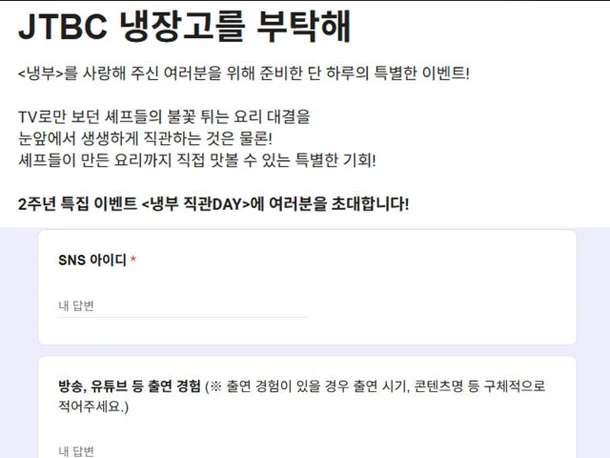

'냉부' 방청객 모집 논란…SNS, 방송 출연 여부까지 조사 "이럴 거면 인플루언서 부르지" : 네이트 연예

최근 '냉장고를 부탁해'는 2주년 특집 이벤트로, 시청자들에게 직접 요리사들의 조리 과정을 직관할 수 있게 참가자를 모집한다고 밝혔다.
오는 11월 23일 녹화를 기준으로 시간은 당첨자에 한해서 추후 안내해 준다며 온라인으로 신청자를 받고 있다.
신청서에는 이름, 본인 사진, 나이, 성별, 현 거주지, 휴대폰 번호, E-mail 주소를 받았고 보통의 다른 양식들과 비슷한 항목이 줄지어 있었다.
그러나 문제는 그다음 항목부터였다.
'SNS 아이디, 방송 유튜브 등 출연 경험 (※ 출연 경험이 있을 경우 출연 시기, 콘텐츠명 등 구체적으로 적어주세요)'라고 적힌 문항은 네티즌들의 분노를 불러일으킨 것이다.
병신같은 인플루언서 거르기 + 노잼 일반인 거르기 목적인것 같은데 쟤네도 일하는건데 거기다 감놔라 배놔라 ㅋㅋㅋ
별거로 다 화내네 한국이 존나게 평화롭긴 한듯